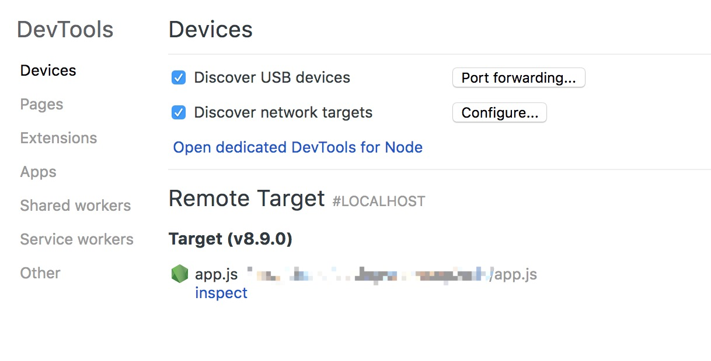
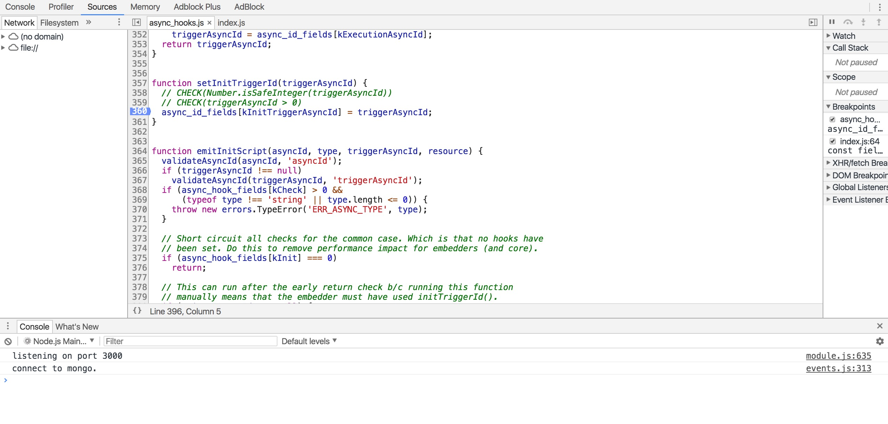

现在就开始debug node 发表于 2018-01-20 | 分类于 工具 | 无需下载额外编辑器，无需安装node-inspector，使用Chrome就可以开始你的node应用调试。 你需要准备： Node.js 6.3+ Chrome 55+ 步骤： 在Chrome中打开chrome://inspect 点击configure,增加你的app端口 使用node –inspect app.js命令运行你的app 在Remote Target中找到你的app，点击inspect 然后就可以在弹出的窗口中进行如网页般熟悉的调试了😉 真是意外的简单 参考链接官方文档